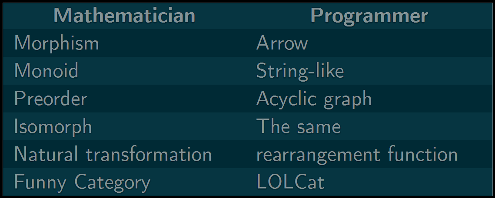
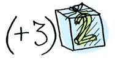
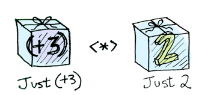

Functional Programming
What, Why and How
Just twitted the slides @jsdude005

Agenda
- Three Basics of Functional Programming
- Five Popular patterns and techniques
- Three higher level Geeky things
- Transform OOP to FP
- ...and lots of fun
Why
FP Shines
- Cloud/Big Data for data processing, filtering, aggregating
- Easier to figure out what the hell is going on in a larger code base
- Concepts are used in web application
- Easier to read, maintain, test
- Avoid a mess of states or multi threading issues
- Modular the functionality
Ref: Why FP matters
What
Ask the geeky guy
- Monads, Monoids, Lift, Functors, actuators
- Immutable, Higher Order, Tail call optimization
- Lazy evaluation, composition, determinism

What the func?
- Dizzying number of “functional” characteristics
- Lambdas!!!
- Learn Haskell
- Is this only a hype or a geeky thing?
- Why it's called functional?
- Is everything else is dysfunctional?
- Why the hell, I have to ruin my weekend on this?
Fully lost!

Like everyone else
Learn driving

ref: Charles Scalfani: So you want to be a functional programmer

Forget everything

you know

Let's Start
Functional Programming
- Application evolves around function
- With only one ground rule: No side effect
- Don’t rely on data outside of the current function
- Don’t change data outside of the current function
- Every other “functional programing” things are derived from this property
- Use this as a guide rope
This is a function
function add(x, y){
return x + y;
}
add(1, 2); // output is 3
add(1, 2); // output still is 3
add(1, 2); // WILL ALWAYS output 3
- No side effect
What about this one?
function mouseOnLeftSide(mouseX) {
return mouseX < window.innerWidth / 2;
}
Few more... impure function
writeFile(fileName);
updateDatabaseTable(sqlCmd);
sendAjaxRequest(ajaxRequest);
openSocket(ipAddress);
- Rely on things outside of input parameter
- Can't always predict their behavior/output
- They will have side effect
- Non FP (C#, Java, JS) has tons of these
Dark side of side effect
When a function produces a side effect you have to know more than just its inputs and output
- To understand what that function does
- You have to know the context and the history
- It makes function harder and unpredictable
- Harder to test and harder to debug
Pure Function
- Output relies solely on input values
- Always produce same output for same inputs.
- Does not produce an observable side effect
- Does not change the program's state
- Highly testable and reusable
Convert Impure to pure
Make global variable local
const myFunc = function(y){
const x = 10;
return x + y;
}
console.log(myFunc(3)); //13
console.log(myFunc(3)); //13
Pass as parameter
const x = 10;
const myFunc = function(x, y){
return x + y;
}
console.log(myFunc(x, 3)); //13
console.log(myFunc(x, 3)); //13
Basic Concept-1
Use Pure function
First Class

function is first class citizen
- Use function as value
- Set function to a variable
- Pass function as parameter
- return function as a value
// function expression
const doubleIt = x => x * 2;
Higher order function
- Either take function as argument
- Or return function
function greaterThan(n) {
return function(m) {
return m > n;
};
}
const greaterThan10 = greaterThan(10);
greaterThan10(11); //true
greaterThan10(7); //false
const greaterThan15 = greaterThan(15);
greaterThan15(11); //false
greaterThan15(21); //true
Basic Concept-2
Function is First Class
Immutability
Treat data as Immutable
- Immutable is not Mutable
- Not changeable
- number, string, boolean are immutable
- Mutation has side effect
- Less changes means less things to keep track
Global Mutable State

Immutability creates simpler and safer code.
Programming vs Math
var x = 1;
x = x + 1;
- It's permitted in Imperative Programming
- In math, x can never be equal to x + 1
- In functional programming, x = x + 1 is illegal
- There are no variables in Functional Programming
- Stored values are still called variables because of history but they are constants
- Once x takes on a value, it’s that value for life
“HOW THE HELL AM I SUPPOSED TO DO ANYTHING WITHOUT VARIABLES?!”
Just create a new variable
Hold on
Loop needs variable
for, while, do while, etc.
var sum = 0;
for (var i = 1; i <= 10; ++i){
sum += i;
}
console.log(sum); // prints 55
“WHAT NO VARIABLES AND NOW NO LOOPS?! I HATE YOU!!!”
Iterate over lists
let tasks = ['write code', 'drink coffee', 'hide from manager'];
const lengths = tasks.map(word => word.length);
console.log(lengths); // [10, 12, 17]
const getLength = word => word.length;
tasks.map(getLength);
meals.map(getLength);
const doubleIt = x => x*2;
tasks.map(getLength).map(doubleIt);
Filter
const numbers = [1, 2, 3, 4];
let newNumbers = [];
for(let i = 0; i < numbers.length; i++) {
if(numbers[i] % 2 !== 0) {
newNumbers[i] = numbers[i] * 2;
}
}
console.log(newNumbers); // [2, 6]
const numbers = [1, 2, 3, 4];
const odd = n => n % 2;
const doubleIt = x => x * 2;
const newNumbers = numbers.filter(odd).map(doubleIt);
Ref: map, filter, reduce
Why map, filter, reduce
- Structure for looping always same
- Map, filter, reduce take care of the repeating parts
- Reduce typing- reduce chances of error
- Focus on the important parts of the iteration: the operation
Understand Immutability
- Think of Immutable data as a value (such as a number)
- A number never changes.
- The number 7, is always 7
- If you add 1 to 7 you get a new value: 8
- It doesn’t change 7 itself
Basic Concept-3
Data is Immutable
Summary 1
So far
- Functional programming means: a lot functions
- Not just functions but pure functions
- With only one ground rule: No side effect
- Avoid shared state, mutable data, and side-effects
- Immutable: No variable, only constant
- No looping: use map, filter, reduce
Three basic Rules
- No Side Effect
- Function is first class citizen
- Data is Immutable
Find the napper
- Who was in the image "Fully Lost?"
Patterns and Techniques
Used in Functional Programming
Warning
WARNING
- Everything you know has a obscure name
- There are harder alternatives to simple things
- Nerd means living dictionary of Jargons
Composition

f(x) = 2x + 3
f(2) = ?
f(2) = 2 * 2 + 3
= 4 + 3
= 7
g(x) = x 2 + 1
g(2) = ?
g(2) = 2 * 2 + 1
= 4 + 1
= 5
What is the value of f(g(x)) or f(g(2))?
f(g(2)) = f(5)
= 2 * 5 + 3
= 10 + 3
= 13
Make this complicated
- What you saw as f(g(x))
- f ∘ g (read as f of g)
- f after g
- calling f after calling g with x
- or simply: f composed with g
g(x) inside f(x)...inside executes first
Khan Academy: function composition
Wait! it's not new
const mult5 = x => x * 5;
const add10 = x => x + 10;
const mult5AfterAdd10 = x => mult5(add10(x));
f(g(x))
Function Composotion
var compose = function(f, g) {
return function(x) {
return f(g(x));
};
};
const mult5 = x => x * 5;
const add10 = x => x + 10;
const mult5AfterAdd10 = compose(add10, mult5);
mult5AfterAdd10(5); //35
executes right to left
Direction matters
ref: Coding by composing
Elm example
add10 value =
value + 10
mult5 value =
value * 5
mult5AfterAdd10 value =
(mult5 << add10) value
f x = (g << h << s << r << t) x
Why Composition
- Put multiple functions together to get one function
- Moves right to left
- Each step sequentially processing it before handing it to the next
- Encourages factoring (breaking apart) for maintainability and code reuse
- Cleans up nesting
Currying
Ref: Haskell Brooks Curry
Currying
- Call a function with one parameter at a time
- Returns a function that takes second parameter
- arguments are taken by a series of one-argument
const sum3 = (x, y, z) => x + y + z;
sum3(1,2,3); //6
function currySum3(x){
return function (y){
return function (z){
return x + y + z;
}
}
}
const currySum3 = x => y => z => x + y + z;
currySum3(1)(2)(3); //= 6
A Curried Function is a function that only takes a single parameter at a time.
Ref: Why Curry Helps and Curry JS
Why Curry?
const modulo = divisor => dividend => dividend % divisor;
modulo (3, 9); //0
const isOdd = modulo(2);
isOdd(6); //0
isOdd(5); //1
- Make reusable generic function
- Build new function by applying args
- Partially applied for higher order function
- Make types "line up" for composition
Currying and Composition
const f = a => b => c => d => a + b + c + d
f(1)(2)(3)(4); // returns 10
const f = R.curry((a, b, c, d) => a + b + c + d);
f(1, 2, 3, 4); // returns 10
f(1, 2)(3, 4); // also returns 10
f(1)(2)(3, 4); // also returns 10
Ref: Ramada JS
Point Free

Point Free Programming
- Also known as Tacit Programming
- function definition does not include arguments
- Uses combinators and function composition instead of variable
- For simplicity you can think point is argument.
- Hence point free is argument free
You use point free: to focus on how rather than what
Ref: Think point free
Point free notation
const toUpperCase = str => str.toUpperCase();
const head = str => str[0];
const compose = (f, g) => x => f(g(x));
//not point free because we mention the data: name
const initials = function(name) {
return name.split(' ').map(compose(toUpperCase,head)).join('. ');
};
initials("that js dude");
// 'T. J. D.'
//point free
const initials = compose(join('. '),
map(compose(toUpperCase, head)), split(' '));
Ref this and this as well or this
Tail call Optimization
Tail call optimization
- A tail call is a function call that is the last action of a function
- Smart compiler recognizes tail calls and reuses the same call frame
- When calling function will simply return the value that it gets from the called function
- Optimized to use constant stack space
- The most common use is tail-recursion
- Can happen for non-recursive case as well
What is a tail call?
//Both f() and g() are in tail position
const a = x => x ? f() : g();
// g() is in a tail position
const a = () => f() || g();
const a = () => f() && g();
fibonacci
function fib(n) {
if (n <= 1){
return n;
} else {
return fib(n-1) + fib(n - 2);
}
}
- Algorithm has O(n) memory complexity
- Calculating fib(1) the callstack has 5 frames on it
- Each remembering how to combine with the other calls
function fibIterRecursive(n, a, b){
if (n === 0) {
return b;
} else {
return fibIterRecursive(n-1, a + b, a);
}
};
function fib(n){
return fibIterRecursive(n, 1, 0);
}
- return invocation of a function
- that function does not need to access any of the current local variables
- Then ES6 strict mode will optimize that call by reusing the stack frame
Pipelines
Collection Pipelines
- A programming pattern
- Lays out a sequence of operations
- Feed output of one operation into the next
- Common in FP and OOP with Lambdas
- Put common operations (map, filter, reduce) together
Pipelines in Unix
find all wiki that mention "nosql" in the text
grep -l 'nosql' wiki
grep -l 'nosql' wiki/* | xargs wc -w
grep -l 'nosql' wiki/* | xargs wc -w | sort -nr
grep -l 'nosql' wiki/* | xargs wc -w | sort -nr | head -4 | tail -3
Pipeline in JS
const addOne = x => x + 1;
const square = x => x * x;
const minusTwo = x => x - 2;
// Not reusable
minusTwo(square(addOne(10)));
minusTwo(square(addOne(20)));
const someFormula = new Pipeline([ addOne, square, minusTwo ]);
someFormula.process(10);
someFormula.process(20)
// alternative approach
const someFormula = (new Pipeline()).pipe(addOne)
.pipe(square)
.pipe(minusTwo);
Ref: pipeline JS
ESNext Proposal
const doubleSay = str => str + ", " + str;
const capitalize = str => str[0].toUpperCase() + str.substring(1);
const exclaim = str => str + '!';
let result = exclaim(capitalize(doubleSay("hello")));
let result = "hello" |> doubleSay |> capitalize |> exclaim;
//Hello, hello!
ref: JS pipeline proposal
Partial application
Currying and partial application
- Currying is strict: always takes 1 parameter at a time
- Partial application is not this strict
- You can pass more than one parameter at a time
Summary 2
So far
- Compose puts functions together
- Curry takes one argument at a time
- Point free...doesn't take arguments
- Partial application takes one or more
- Tail call is a compiler magic
Code reuse
- Code reuse sounds great but is difficult to achieve.
- Make the code too specific and you can’t reuse it.
- Make it too general and it can be too difficult to use in the first place
- So what we need is a balance between the two, a way to make smaller
Find the napper
While cooking curry...how many people were adding spices?
Category Theory
In theory, there is no difference between theory and practice. But, in practice, there is.
Category Theory
- Mathematical discipline in theoretical computer science
- It has a wide range of applications
- Concepts like Category, Functor, Monad, and others
- Understanding Category Theory isn't a must to understand FP
Ref: Category Theory
Categories

- A category consists of objects and arrows that go between them.
- Arrows are known as morphisms. Morphisms can be thought of as functions.

For any group of connected objects, a -> b -> c, there must be a composition which goes directly from a -> c.
Mathematicians vs Programmer
Functor
Functor in theory
- The term “functor” comes from category theory
A functor is a container of type a that, when subjected to a function that maps from a→b, yields a container of type b.
ref: what is functor
Fun Fun Functor
- An object with a .map() method
- map method takes function as a parameter
- maps from one set of values to another
- Return another functor so that you can map further
- Think functor as something mappable
- Like array, streams, trees, objects
A functor supplies a box with zero or more things inside, and a mapping interface.
Functor has two laws
- Identity
- Composition
const functor = [1, 2, 3];
functor.map(x => x); // [1, 2, 3]
functor.map(x => f(g(x))) ≡ functor.map(g).map(f)

Functor
const Container = x => ({
map:(f) => Container(f(x)),
toString(){return `Container(${x})`}
});
const inContainer = Container(5);
const mapped = inContainer.map(x => x*2)
mapped.toString(); //Container(10)
const transformValue = x => Container(x)
.map(x => x*2)
.map(x => x*3)
.map(x => x+46)
.map(x => String.fromCharCode(x))
Promises are Functor
// promise is a functor
getUsers()
.map(user => user.firstName)
.map(firstName => firstName.toUpperCase());
Applicatives
Combine multiple functor into one functor
Ref: applicatives
Wrapped values
var wrapped2 = [2];
var wrapped3 = [3];
//Won't work ! The values are wrapped.
add(wrapped2, wrapped3);

Ref: applicatives
Monads
Monads in Two steps
- Get a PhD in Computer Science
- Throw it away because you don't need PhD to understand Monad
The moment you understand what is monads, is the moment you loose the ability to explain it to someone else.
Functors, Applicatives
Functors apply a function to a wrapped value
Applicatives apply a wrapped function to a wrapped value
Monads
Monads apply a function that returns a wrapped value to a wrapped value
const half = x => (x%2 === 0) ? [x/2] : [];
Array.prototype.flatMap = function(lambda) {
return [].concat.apply([], this.map(lambda));
};
[3].flatMap(half); //[]
[4].flatMap(half); //[2]
[].flatMap(half); //[]
Simple way: Monad is the container that Applies flatMap
Ref: monad in JS
Few Types of Monad
Summary 3
- functor means mappable
- wrapped value to wrapped value
Contrast with OOP
Inheritance
- Inertance says what they are
Dog
.bark()
Cat
.meow()
Inheritance
Dog
.poop()
.bark()
Cat
.poop()
.meow()
Inheritance
Animal
.poop()
Dog
.bark()
Cat
.meow()
Inheritance
CleaningRobot
.drive()
.clean()
Animal
.poop()
Dog
.bark()
Cat
.meow()
Inheritance
MurderRobot
.drive()
.kill()
CleaningRobot
.drive()
.clean()
Animal
.poop()
Dog
.bark()
Cat
.meow()
Robot
.drive()
MurderRobot
.kill()
CleaningRobot
.clean()
Animal
.poop()
Dog
.bark()
Cat
.meow()
Murder Robot Dog?
Kill, drive, bark & poop
Robot
.drive()
MurderRobot
.kill()
CleaningRobot
.clean()
Animal
.poop()
Dog
.bark()
Cat
.meow()
More higher level object???
GameObject
.bark()
Robot
.drive()
MurderRobot
.kill()
CleaningRobot
.clean()
MurderRobotDog
Animal
.poop()
Dog
.bark()
Cat
.meow()
Robot
.drive()
MurderRobot
.kill()
CleaningRobot
.clean()
MurderRobotDog
.bark()
- Getting more functionality than needed
- Like Gorilla - Banana Problem
- You asked for a banana
- You get a gorilla holding a banana
Composition
- Inertance: Types are designed on what they are
- Composition: Types are designed on what they do
dog = pooper + barker
cat = pooper + meower
cleaningRobot = driver + cleaner
murderRobot = driver + killer
murderRobotDog = murderRobot + dog
poopingMurderRobot = murderRobot + pooper
Composition benefit
- On error, you will see a stack trace
- Through every function down to the source of the bug
- In OOP: it could be confusing
- As you don’t always know the state of the rest of the object which led to the bug
OOP and FP are not mutually exclusive
- Start with less side affect mind set
- Prefer immutable data
- Use pure function
- Prefers declarative style
- Put Implementation detail packaged away
- Target cleaner, readable code
Free tip
My top 8 excuses
- It worked on my machine
- Browser might be caching old content. hit Ctlr + F5
- You must have the wrong version
- Ohh...I forgot to push the changes
- That was only supposed to be a placeholder
- It's not a true bug, it's a new feature
- The guy who left, his code is causing this
- It's a known issue in JavaScript
Final Summary
Functiona Programming
Depending on whom you have asked: Functional programming
- The mustachioed hipster of programming.
- Or undigestible scientific theory for programming
It's coming to hunt you
Who is
JS Dude?

- @jsdude005
- Organizer Chicago JavaScript meetup
- Organize Chicago front end developers group
- This is my fifth year in that conference
- Giving talk all over the places
- Run Marathon, sky diving, tough mudder
khan4019@gmail.com
khan4019.github.io/functional-programming
ohh, thanks for being here!